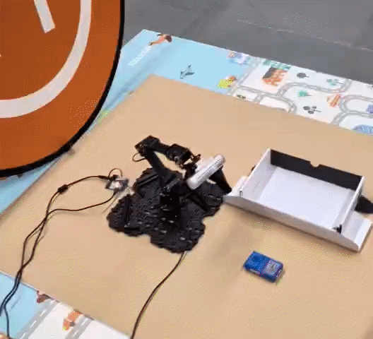
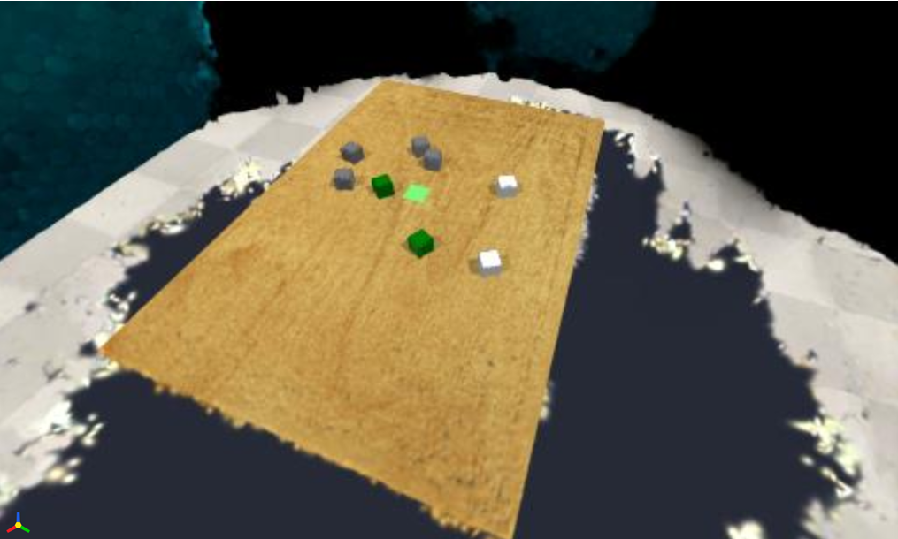
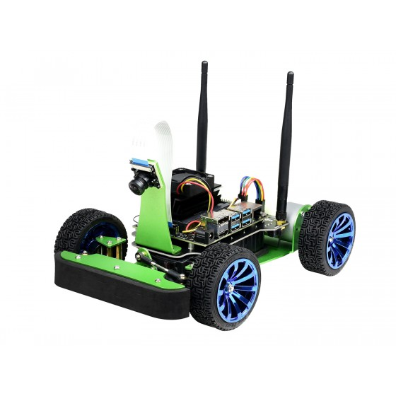
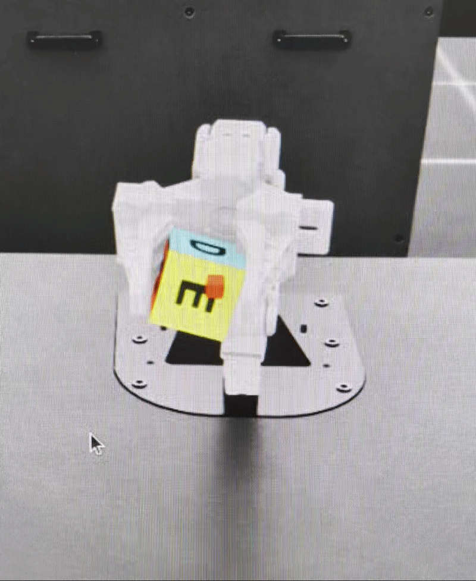
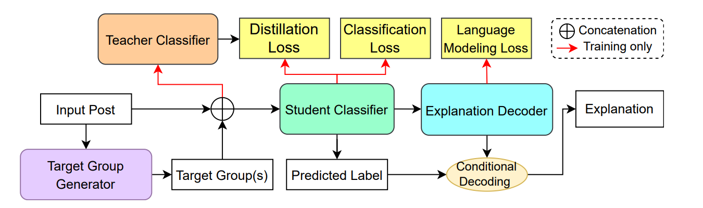

Things I have built, broken, and occasionally shipped. Spans research prototypes, side experiments, and course work worth keeping. Updated when something earns it.
-

Data-Driven Robotic Manipulation with ACT2025Taught an OpenManipulator-X arm to pick and place objects from just 50 demonstrations using Action Chunking Transformers (ACT). Improved success rate from 30% to 90% through systematic environment engineering.
-

POGS-ACT: Persistent Object Gaussian Splatting for Action Chunking Transformers2026Decoupled perception from control in robotic manipulation by replacing fragile 2D image features with a persistent 3D Gaussian Splatting scene representation, making policies robust to viewpoint shifts and visual occlusion.
-

Vision-Based Autonomous Navigation on JetRacer2025End-to-end autonomous navigation for a 1/10th-scale JetRacer using only a monocular RGB camera. Implemented DINOv2-based localization, SegFormer floor segmentation, and real-time path planning.
-

Deep RL for Robotic Pick-and-Place2025Explored deep reinforcement learning for robotic grasping in NVIDIA Isaac Lab. Compared a vision-only DQN approach using pixel-wise Q-maps against a baseline PPO agent with full state information.
-

ToXCL: Unified Toxic Speech Detection & Explanation2024Implemented a unified framework based on Flan-T5 that simultaneously classifies toxic speech and generates human-readable explanations. Explored the impact of lexical shortcuts and implicit hate in standard NLP datasets.